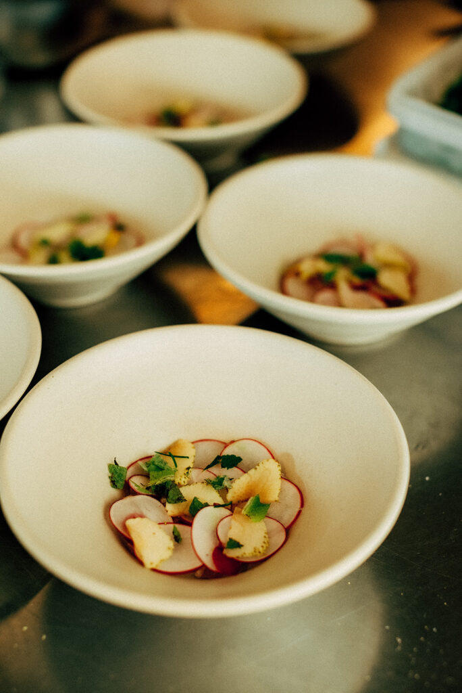
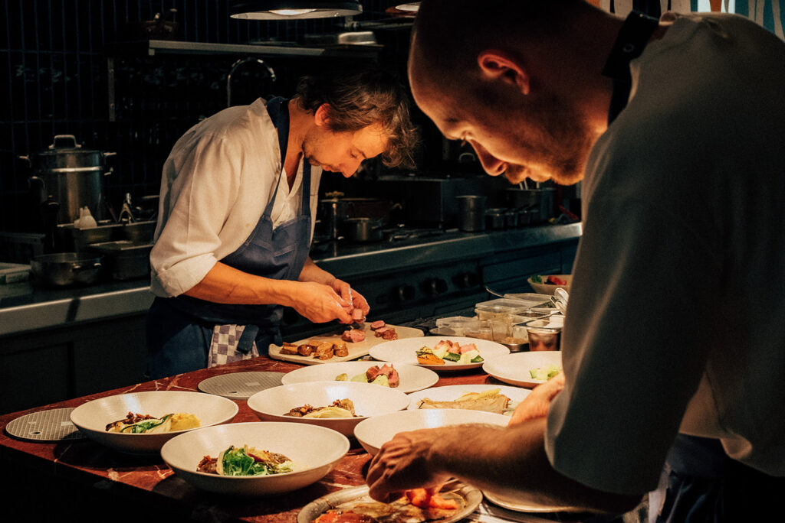
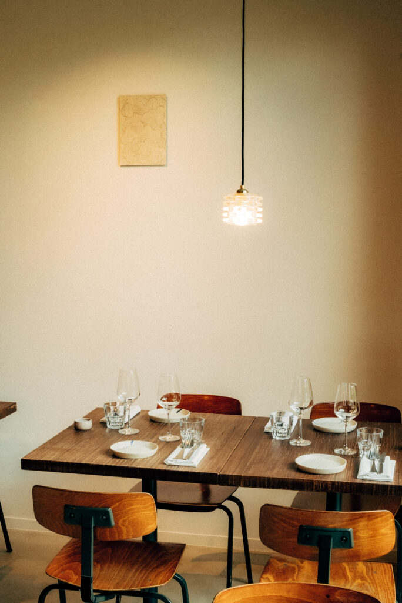
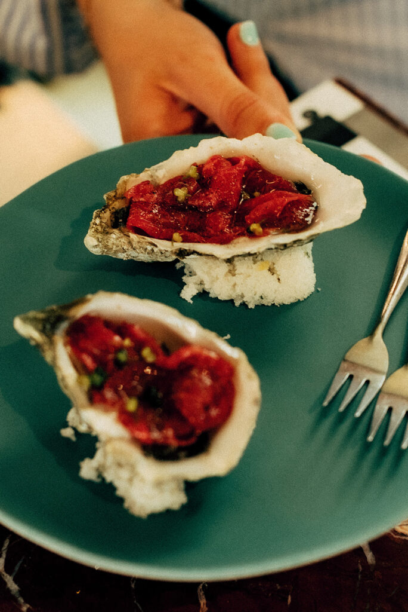
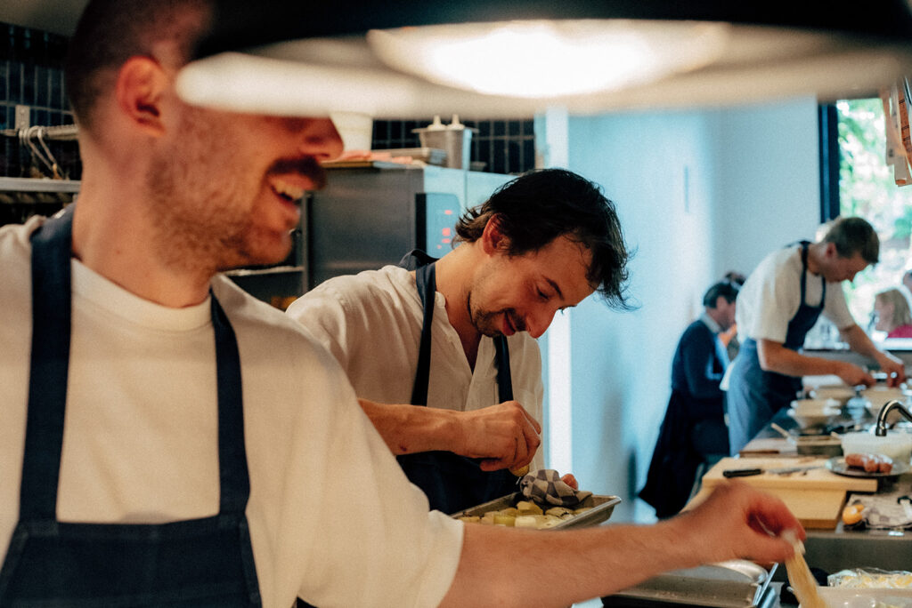
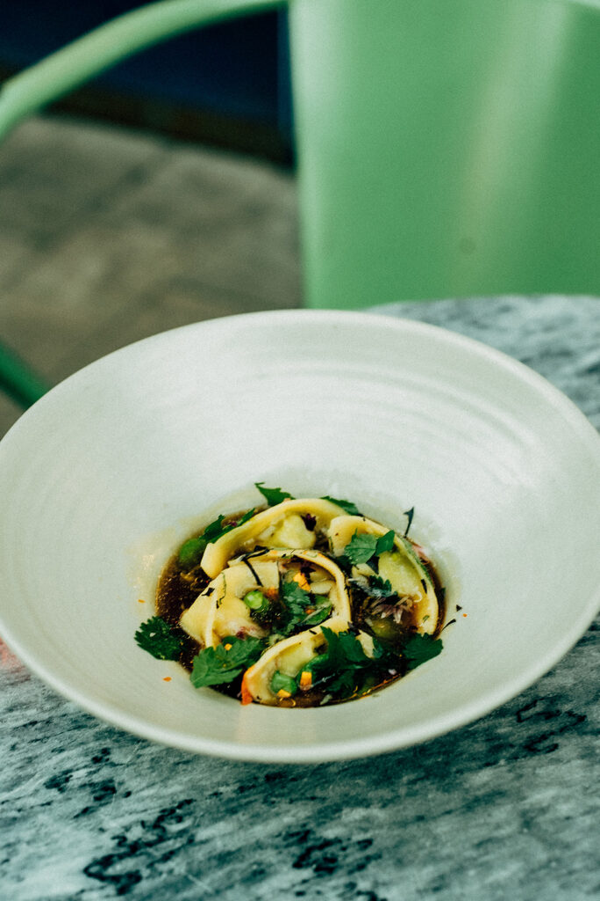
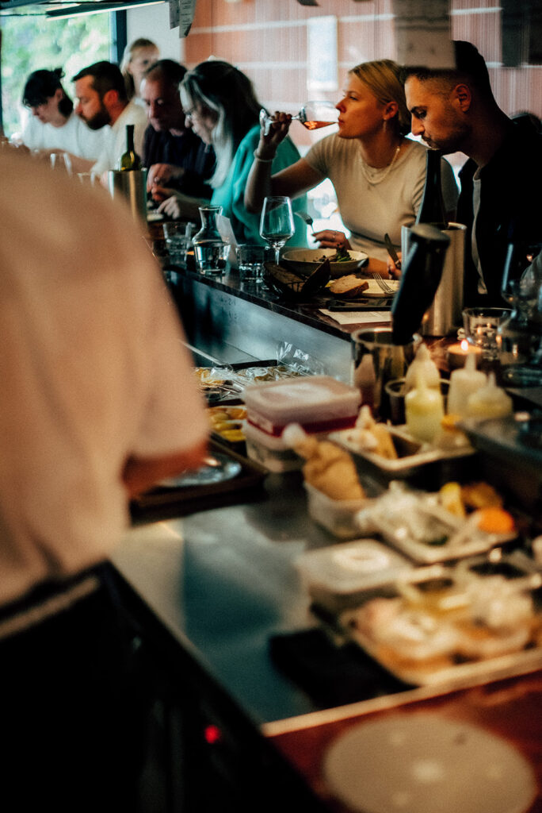
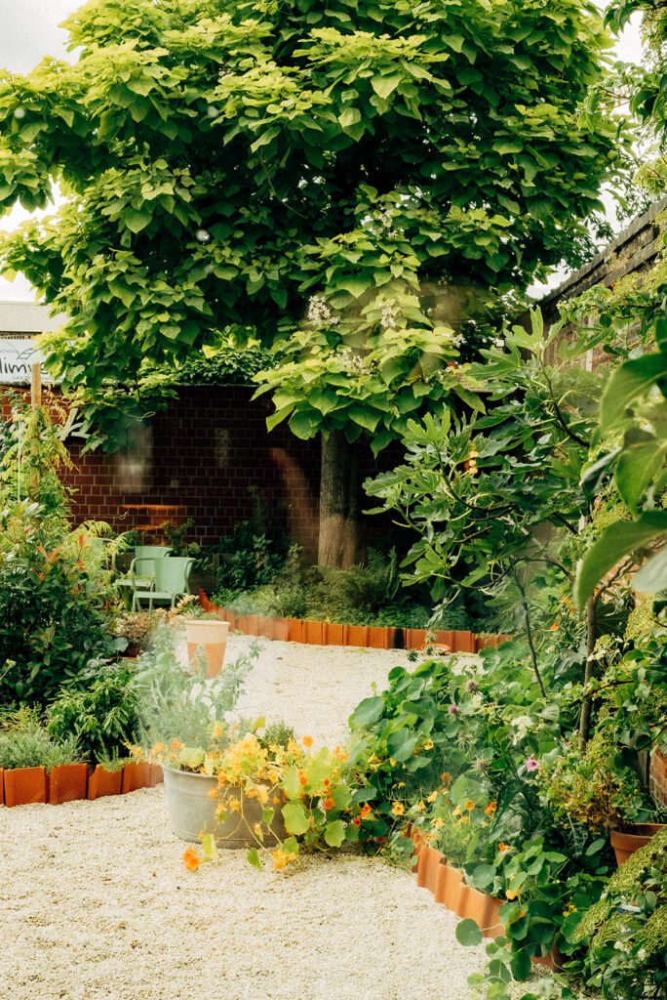
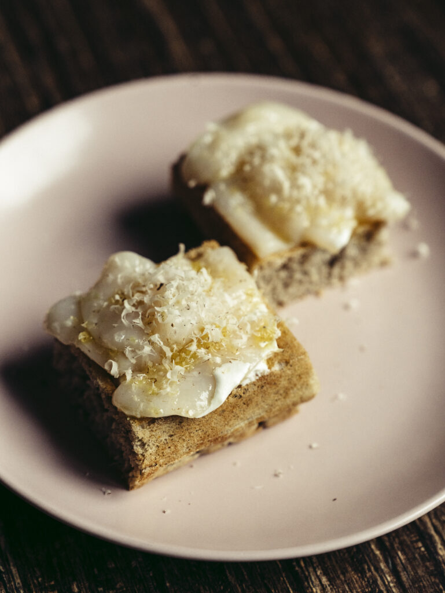
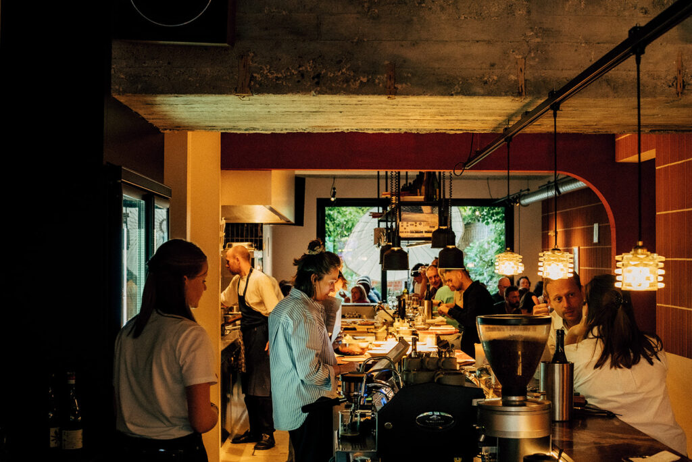

01 / Woensdag — zaterdag
DE AVOND
IS VAN JOU.
Zes gangen, de open keuken en alle tijd om bij te praten. Laat je verrassen door het seizoen.
€75 / p.p.

6 gangen, veel goesting.
Aangenaam, wij zijn Elders






Een plek in de Bloemekenswijk. Voor wat het seizoen brengt, een goed glas en nog een laatste hap. We koken met aandacht, schenken met goesting en zien je graag komen.
Vind ons in Gent ↗Het beste van de buurt
De markt op het plein, koffie in je hand. Op zondag doen we het op ons gemak. Kom langs voor apero en iets lekkers, of maak er een lange middag aan tafel van.
Zondag bij Elders ↗Bar vanaf 10:30 · Keuken 12:00–14:00

ZONDAG
Tot zo?
Voor een grote avond of zomaar een donderdag.
Er is altijd een goede reden om aan te schuiven.